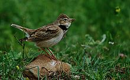
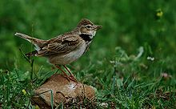

| Calandra Lark | |
|---|---|
|  | |
| Conservation status | |
| Binomial name | |
| Melanocorypha calandra (Linnaeus, 1766) |
| Calandra Lark | |
|---|---|
|  | |
| Conservation status | |
| Binomial name | |
| Melanocorypha calandra (Linnaeus, 1766) |
The Calandra Lark, Melanocorypha calandra, breeds in warm temperate countries around the Mediterranean and eastwards through Turkey into northern Iran and southern Russia. It is replaced further east by its relative, the Bimaculated Lark.
It is mainly resident in the west of its range, but Russian populations of this passerine bird are more migratory, moving further south in winter, as far as the Arabian peninsula and Egypt. It is a very rare vagrant to western Europe.
This is a bird of open cultivation and steppe. Its nest is on the ground, with 4–5 eggs being laid. Food is seeds supplemented with insects in the breeding season. It is gregarious outside the breeding season.
This is a large, robust lark, 17.5–20 cm long. It is an undistinguished-looking species on the ground, mainly streaked greyish-brown above and white below, and with large black patches on the breast sides. It has a white supercilium.
In flight it shows short broad wings, which are dark below, and a short white-edged tail. The wing and tail patterns are distinctions from its more easterly relatives.
The song is like a slower version of that of the Skylark, so musical to human ears that the Calandra Lark was formerly a popular cagebird in its range (Kikkawa 2003). It is mentioned in, for instance, the Tuscan proverb "Canta come una calandra", he or she sings like a lark (Giusti 1853), and the Spanish ballad "Romance del prisionero", where its song is the only way the prisoner knows when day breaks (Applebaum 2004).

{kind=link}